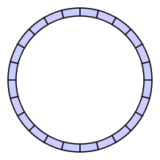
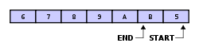
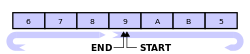

RingBuf 简介
简介¶
环形队列，Circular Queue，或者也被称为 Ring Buffer，Circular Buffer，Cyclic Buffer 等等，是一种用于表示一个固定尺寸、头尾相连的缓冲区的数据结构，适合缓存数据流。它的学术上的研讨不在本文的展开范围内，简而言之，不但是通信开发（Socket，TCP/IP，RPC开发）中，在内核的IPC中，在视频音频播放中，在类似于 Map-Reduce 的工作队列排列中，在广泛的各种需要数据流数据结构表示的场景中，环形队列往往是一种最佳选择。
表示¶
下面的内容参考了 Wiki 相关条目1，并且沿用了其上的图示。
在算法与数据结构表示中，一个环形队列形如：

但很明显，计算机内存是线性而非是环状的，因而当环形队列被实现到内存中时，通常会用一个连续的内存块来表示，同时通过使用一对额外的指针来指示首、尾位置，从而在逻辑上将其卷曲起来：

特性¶
首先，环形队列是有界的。环形队列适合于事先明确了缓冲区的最大容量的情形。扩展一个环形队列的容量，需要搬移其中的数据。因此一个缓冲区如果需要经常调整其容量，用链表实现更为合适。
其次，环形队列是一种 FIFO 数据结构。它和普通 FIFO 队列数据结构的不同就在于队尾连接着队首，当入列元素位于队尾时，该元素将被回绕并放在队首的位置，从而完成有界性限定。而普通的 FIFO 队列总是增长队尾以入列新元素，并不限制队列的有效长度。
高性能¶
环形队列的一个有用特性是：当一个数据元素被用掉后，其余数据元素不需要移动其存储位置。
相反，一个非环形队列（例如一个普通的队列）在用掉一个数据元素后，其余数据元素需要向前搬移（这也并非必须如此，链表可以避免数据搬移带来的读写性能差，但也会进一步衍生出新的问题——其链表指针操作难以无锁化导致SMP场景中读写性能差）。
正是因为这一特性，环形队列具有先天优势，无需数据搬移（也避免了动态内存分配）。而由于环形队列通常仅仅需要固定的首尾两个指针（一般的实现中，这两个指针实际上都是数组的下标值）即可访问，因而很容易解决 SMP 场景中的无锁化问题。
可覆盖与不可覆盖¶
环形队列可以是可覆盖的。
写操作覆盖环形队列中未被处理的数据在某些情况下是允许的。特别是在多媒体处理时。例如，音频的生产者可以覆盖掉声卡尚未来得及处理的音频数据。当然，这样一来用户听觉上会不可避免地感受到跳帧的现象，彷佛在说，资源不够用啊，要加大啊。
如果环形队列不被允许可覆盖，则当队列满时，入列操作可能导致阻塞。
算法描述¶
下面的内容参考了 Wiki 相关条目1，并且沿用了其上的图示。
工作过程¶
一个圆形缓冲区最初为空并有预定的长度。例如，这是一个具有七个元素空间的圆形缓冲区，其中底部的单线与箭头表示“头尾相接”形成一个圆形地址空间：
{kind=link}
假定1被写入缓冲区中部（对于圆形缓冲区来说，最初的写入位置在哪里是无关紧要的）：
{kind=link}
再写入2个元素，分别是2 & 3 — 被追加在1之后：
{kind=link}
如果两个元素被处理，那么是缓冲区中最老的两个元素被移除。在本例中，1 & 2被移除，缓冲区中只剩下3:
{kind=link}
如果缓冲区中有7个元素，则是满的：
{kind=link}
如果缓冲区是满的，又要写入新的数据，一种策略是覆盖掉最老的数据。此例中，2个新数据— A & B — 写入，覆盖了3 & 4:
{kind=link}
也可以采取其他策略，禁止覆盖缓冲区的数据，采取返回一个错误码或者抛出异常。
最终，如果从缓冲区中移除2个数据，不是3 & 4 而是 5 & 6 。因为 A & B 已经覆盖了3 & 4：
{kind=link}
实现方案¶
由于计算机内存是线性地址空间，因此圆形缓冲区需要特别的设计才可以从逻辑上实现。
读指针与写指针¶
一般的，圆形缓冲区需要4个指针：
- 在内存中实际开始位置；
- 在内存中实际结束位置，也可以用缓冲区长度代替；
- 存储在缓冲区中的有效数据的开始位置（读指针）；
- 存储在缓冲区中的有效数据的结尾位置（写指针）。
读指针、写指针可以用整型值来表示。
下例为一个未满的缓冲区的读写指针：

下例为一个满的缓冲区的读写指针：

区分缓冲区满或者空¶
缓冲区是满、或是空，都有可能出现读指针与写指针指向同一位置：

有多种策略用于检测缓冲区是满、或是空.
总是保持一个存储单元为空¶
缓冲区中总是有一个存储单元保持未使用状态。缓冲区最多存入 (size-1) 个数据。如果读写指针指向同一位置，则缓冲区为空。如果写指针位于读指针的相邻后一个位置，则缓冲区为满。这种策略的优点是简单、粗暴；缺点是语义上实际可存数据量与缓冲区容量不一致，测试缓冲区是否满需要做取余数计算。
使用数据计数¶
这种策略不使用显式的写指针，而是保持着缓冲区内存储的数据的计数。因此测试缓冲区是空是满非常简单；对性能影响可以忽略。缺点是读写操作都需要修改这个存储数据计数，对于多线程访问缓冲区需要并发控制。
镜像指示位¶
缓冲区的长度如果是n，逻辑地址空间则为0至n-1；那么，规定n至2n-1为镜像逻辑地址空间。本策略规定读写指针的地址空间为0至2n-1，其中低半部分对应于常规的逻辑地址空间，高半部分对应于镜像逻辑地址空间。当指针值大于等于2n时，使其折返（wrapped）到ptr-2n。使用一位表示写指针或读指针是否进入了虚拟的镜像存储区：置位表示进入，不置位表示没进入还在基本存储区。
{kind=link}
在读写指针的值相同情况下，如果二者的指示位相同，说明缓冲区为空；如果二者的指示位不同，说明缓冲区为满。这种方法优点是测试缓冲区满/空很简单；不需要做取余数操作；读写线程可以分别设计专用算法策略，能实现精致的并发控制。 缺点是读写指针各需要额外的一位作为指示位。
如果缓冲区长度是2的幂，则本方法可以省略镜像指示位。如果读写指针的值相等，则缓冲区为空；如果读写指针相差n，则缓冲区为满，这可以用条件表达式（写指针 == (读指针 异或 缓冲区长度)）来判断。
// This approach adds one bit to end and start pointers
// Circular buffer object
typedef struct {
int size; // maximum number of elements
int start; // index of oldest element
int end; // index at which to write new element
ElemType *elems; // vector of elements
} CircularBuffer;
void cbInit(CircularBuffer *cb, int size) {
cb->size = size;
cb->start = 0;
cb->end = 0;
cb->elems = (ElemType *)calloc(cb->size, sizeof(ElemType));
}
void cbPrint(CircularBuffer *cb) {
printf("size = 0x%x, start = %d, end = %d\n", cb->size, cb->start, cb->end);
}
int cbIsFull(CircularBuffer *cb) {
return cb->end == (cb->start ^ cb->size); // This inverts the most significant bit of start before comparison
}
int cbIsEmpty(CircularBuffer *cb) {
return cb->end == cb->start;
}
int cbIncr(CircularBuffer *cb, int p) {
return (p + 1) & (2 * cb->size - 1); // start and end pointers incrementation is done modulo 2*size
}
void cbWrite(CircularBuffer *cb, ElemType *elem) {
cb->elems[cb->end & (cb->size - 1)] = *elem;
if (cbIsFull(cb)) // full, overwrite moves start pointer
cb->start = cbIncr(cb, cb->start);
cb->end = cbIncr(cb, cb->end);
}
void cbRead(CircularBuffer *cb, ElemType *elem) {
*elem = cb->elems[cb->start & (cb->size - 1)];
cb->start = cbIncr(cb, cb->start);
}
读/写 计数¶
用两个有符号整型变量分别保存写入、读出缓冲区的数据数量。其差值就是缓冲区中尚未被处理的有效数据的数量。这种方法的优点是读线程、写线程互不干扰；缺点是需要额外两个变量。
记录最后的操作¶
使用一位记录最后一次操作是读还是写。读写指针值相等情况下，如果最后一次操作为写入，那么缓冲区是满的；如果最后一次操作为读出，那么缓冲区是空。 这种策略的缺点是读写操作共享一个标志位，多线程时需要并发控制。
相关实现¶
POSIX优化实现¶
下面是一个适合于 Linux 的实现，同时也具备 POSIX 可移植性：
#include <sys/mman.h>
#include <stdlib.h>
#include <unistd.h>
#define report_exceptional_condition() abort ()
struct ring_buffer {
void *address;
unsigned long count_bytes;
unsigned long write_offset_bytes;
unsigned long read_offset_bytes;
};
// Warning order should be at least 12 for Linux
void ring_buffer_create (struct ring_buffer *buffer, unsigned long order) {
char path[] = "/dev/shm/ring-buffer-XXXXXX";
int file_descriptor;
void *address;
int status;
file_descriptor = mkstemp(path);
if (file_descriptor < 0)
report_exceptional_condition();
status = unlink(path);
if (status)
report_exceptional_condition();
buffer->count_bytes = 1UL << order;
buffer->write_offset_bytes = 0;
buffer->read_offset_bytes = 0;
status = ftruncate(file_descriptor, buffer->count_bytes);
if (status)
report_exceptional_condition();
buffer->address = mmap (NULL, buffer->count_bytes << 1, PROT_NONE,
MAP_ANONYMOUS | MAP_PRIVATE, -1, 0);
if (buffer->address == MAP_FAILED)
report_exceptional_condition();
address =
mmap(buffer->address, buffer->count_bytes, PROT_READ | PROT_WRITE,
MAP_FIXED | MAP_SHARED, file_descriptor, 0);
if (address != buffer->address)
report_exceptional_condition();
address = mmap(buffer->address + buffer->count_bytes,
buffer->count_bytes, PROT_READ | PROT_WRITE,
MAP_FIXED | MAP_SHARED, file_descriptor, 0);
if (address != buffer->address + buffer->count_bytes)
report_exceptional_condition();
status = close(file_descriptor);
if (status)
report_exceptional_condition();
}
void ring_buffer_free(struct ring_buffer *buffer) {
int status;
status = munmap(buffer->address, buffer->count_bytes << 1);
if (status)
report_exceptional_condition ();
}
void *ring_buffer_write_address(struct ring_buffer *buffer) {
// void pointer arithmetic is a constraint violation.
return buffer->address + buffer->write_offset_bytes;
}
void ring_buffer_write_advance(struct ring_buffer *buffer, unsigned long count_bytes) {
buffer->write_offset_bytes += count_bytes;
}
void *ring_buffer_read_address(struct ring_buffer *buffer) {
return buffer->address + buffer->read_offset_bytes;
}
void ring_buffer_read_advance(struct ring_buffer *buffer, unsigned long count_bytes) {
buffer->read_offset_bytes += count_bytes;
if (buffer->read_offset_bytes >= buffer->count_bytes) {
// 如果读指针大于等于缓冲区长度，那些读写指针同时折返回[0, buffer_size]范围内
buffer->read_offset_bytes -= buffer->count_bytes;
buffer->write_offset_bytes -= buffer->count_bytes;
}
}
unsigned long ring_buffer_count_bytes(struct ring_buffer *buffer) {
return buffer->write_offset_bytes - buffer->read_offset_bytes;
}
unsigned long ring_buffer_count_free_bytes(struct ring_buffer *buffer) {
return buffer->count_bytes - ring_buffer_count_bytes (buffer);
}
void ring_buffer_clear(struct ring_buffer *buffer) {
buffer->write_offset_bytes = 0;
buffer->read_offset_bytes = 0;
}
/* Note, that initial anonymous mmap() can be avoided - after initial mmap() for descriptor fd,
you can try mmap() with hinted address as (buffer->address + buffer->count_bytes) and if it fails -
another one with hinted address as (buffer->address - buffer->count_bytes).
Make sure MAP_FIXED is not used in such case, as under certain situations it could end with segfault.
The advantage of such approach is, that it avoids requirement to map twice the amount you need initially
(especially useful e.g. if you want to use hugetlbfs and the allowed amount is limited)
and in context of gcc/glibc - you can avoid certain feature macros
(MAP_ANONYMOUS usually requires one of: _BSD_SOURCE, _SVID_SOURCE or _GNU_SOURCE). */
这一实现属于教科书式样，但不应被用于实际工作场景中，原因在于以下几点：
- 使用 mmap 特性，这可能不是我们想要的方式：mmap 带有额外的 kernel api 调用开销，可能不是最佳选择，除非你需要进程间通信这一环形队列。
- 操作只能在单线程中，否则可能有数据竞争问题。
¶
Linux内核的kfifo¶
在Linux内核文件 kfifo.h 和 kfifo.c 中，定义了一个先进先出圆形缓冲区实现。如果只有一个读线程、一个写线程，二者没有共享的被修改的控制变量，那么可以证明这种情况下不需要并发控制。kfifo就满足上述条件。kfifo要求缓冲区长度必须为2的幂。读、写指针分别是无符号整型变量。把读写指针变换为缓冲区内的索引值，仅需要“按位与”操作：（指针值 按位与 （缓冲区长度-1））。这避免了计算代价高昂的“求余”操作。且下述关系总是成立：
读指针 + 缓冲区存储的数据长度 == 写指针
即使在写指针达到了无符号整型的上界，上溢出后写指针的值小于读指针的值，上述关系仍然保持成立（这是因为无符号整型加法的性质）。 kfifo的写操作，首先计算缓冲区中当前可写入存储空间的数据长度：
len = min{待写入数据长度, 缓冲区长度 - （写指针 - 读指针）}
然后，分两段写入数据。第一段是从写指针开始向缓冲区末尾方向；第二段是从缓冲区起始处写入余下的可写入数据，这部分可能数据长度为0即并无实际数据写入。